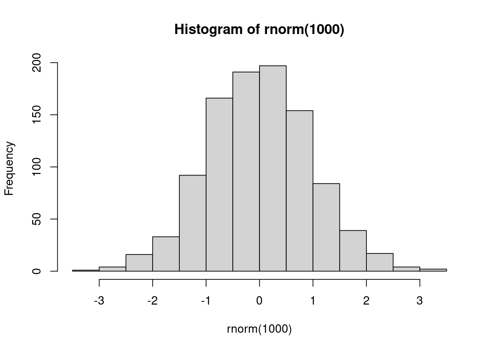
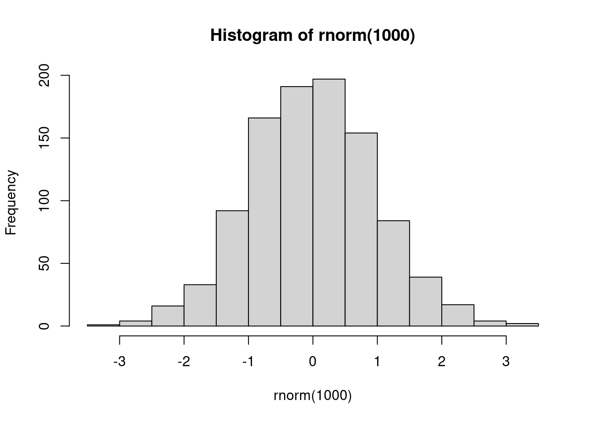

hist(rnorm(1000))
Este é um subtítulo
Quarto enables you to weave together/ content and executable code into a finished document. To learn more about Quarto see clique aqui
| Col1 | Col2 | Col3 |
|---|---|---|
| jjd | ddd | |
When you click the Render button a document will be generated that includes both content and the output of embedded code. You can embed code like this:
hist(rnorm(1000))
You can add options to executable code like this
[1] 4The echo: false option disables the printing of code (only output is displayed).
Como diria Zabala1
Igualmente, Luvizotto entende que o conceito de jurimetria é polissêmico2
Seu texto
Seu código
Seu texto
seu código
ZABALA, Filipe Jaeger and SILVEIRA, Fabiano Feijó, Jurimetria: Estatı́stica aplicada ao direito, Revista Direito e Liberdade, Natal, vol. 16, no. 1, p. 87–103, 2014.↩︎
LUVIZOTTO, Juliana Cristina and GARCIA, Gilson Piqueras, A jurimetria e sua aplicação nos tribunais de contas: Análise de estudo sobre o tribunal de contas da união (TCU), revista controle: doutrinas e artigos, vol. 18, no. 1, p. 46–73, 2020.↩︎